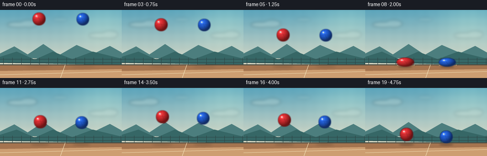
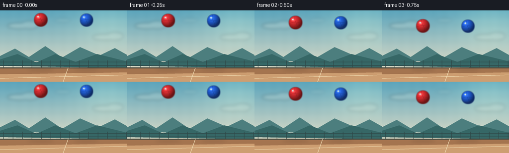

CODING AGENTS AS PIXEL WORLD MODELS
traex/GPT-5.6-Sol · instance_preservation_0024
点击播放 · 原生 RGB 像素
逐轮保存的候选
回放视频、检查图与代码变化。
每份候选均可单独播放。实际图片检查记录在下方工具轨迹中。
候选 01播放与检查图
点击播放 · 原生 RGB 像素


展开代码变化
--- 上一保存版本
+++ 本次保存版本
@@ -0,0 +1,259 @@
+"""Procedurally render the requested two-ball bounce animation.
+
+The scene is deliberately deterministic and uses only Pillow/numpy geometry.
+Running this file recreates all submission artifacts in this directory.
+"""
+
+from pathlib import Path
+import json
+import math
+
+import numpy as np
+from PIL import Image, ImageDraw, ImageFilter
+
+import artifact_io
+
+
+ROOT = Path(__file__).resolve().parent
+SPEC = json.loads((ROOT / "task_spec.json").read_text())
+W, H = int(SPEC["width"]), int(SPEC["height"])
+N, FPS = int(SPEC["frames"]), float(SPEC["fps"])
+SS = 4 # supersampling gives clean silhouettes and fine highlights
+
+
+def background() -> Image.Image:
+ """A softly lit, uncluttered outdoor court."""
+ w, h = W * SS, H * SS
+ yy, xx = np.mgrid[0:h, 0:w]
+ yn = yy / max(1, h - 1)
+
+ top = np.array([91, 164, 187], dtype=float)
+ bottom = np.array([224, 221, 199], dtype=float)
+ mix = np.minimum(yn / 0.82, 1.0)[..., None]
+ rgb = top * (1 - mix) + bottom * mix
+
+ # A warm, diffuse glow, rather than a distracting drawn sun.
+ glow = np.exp(-(((xx / SS - 220) / 66) ** 2 + ((yy / SS - 23) / 50) ** 2))
+ rgb += glow[..., None] * np.array([24, 20, 10])
+ # Very subtle paper/film grain prevents a sterile flat background.
+ grain = (np.sin(xx * 0.071) + np.sin(yy * 0.093)) * 0.65
+ rgb += grain[..., None]
+ rgb = np.uint8(np.clip(rgb, 0, 255))
+ im = Image.fromarray(rgb, "RGB").convert("RGBA")
+
+ # Gauzy distant clouds.
+ clouds = Image.new("RGBA", (w, h), (0, 0, 0, 0))
+ cd = ImageDraw.Draw(clouds)
+ for cx, cy, rx, ry, a in [
+ (39, 31, 24, 6, 48), (60, 29, 18, 8, 45), (211, 54, 25, 6, 33),
+ (231, 52, 17, 8, 31), (126, 20, 16, 4, 22),
+ ]:
+ cd.ellipse(((cx-rx)*SS, (cy-ry)*SS, (cx+rx)*SS, (cy+ry)*SS),
+ fill=(246, 246, 229, a))
+ clouds = clouds.filter(ImageFilter.GaussianBlur(3.2 * SS))
+ im = Image.alpha_composite(im, clouds)
+
+ d = ImageDraw.Draw(im, "RGBA")
+ # Layered hills establish depth while keeping the moving objects dominant.
+ d.polygon([(0, 100*SS), (0, 92*SS), (30*SS, 77*SS), (58*SS, 94*SS),
+ (91*SS, 72*SS), (125*SS, 95*SS), (161*SS, 74*SS),
+ (200*SS, 91*SS), (231*SS, 76*SS), (w, 90*SS), (w, 108*SS)],
+ fill=(76, 126, 126, 105))
+ d.polygon([(0, 112*SS), (0, 99*SS), (35*SS, 88*SS), (73*SS, 105*SS),
+ (111*SS, 88*SS), (152*SS, 104*SS), (195*SS, 88*SS),
+ (w, 103*SS), (w, 116*SS)], fill=(54, 103, 102, 150))
+
+ # Tiny distant fence: enough scale information to make the fall feel tall.
+ fence_col = (47, 72, 72, 60)
+ d.line([(0, 104*SS), (w, 104*SS)], fill=fence_col, width=1*SS)
+ d.line([(0, 111*SS), (w, 111*SS)], fill=fence_col, width=1*SS)
+ for x in range(7, W, 19):
+ d.line([(x*SS, 101*SS), (x*SS, 116*SS)], fill=fence_col, width=1*SS)
+
+ # Court plane and understated perspective markings.
+ d.rectangle((0, 115*SS, w, h), fill=(164, 116, 79, 255))
+ d.rectangle((0, 115*SS, w, 117*SS), fill=(78, 79, 68, 190))
+ # Soft bands of floor light.
+ d.polygon([(0, 129*SS), (w, 125*SS), (w, h), (0, h)],
+ fill=(205, 158, 113, 65))
+ d.line([(0, 137*SS), (w, 130*SS)], fill=(239, 218, 176, 120), width=1*SS)
+ d.line([(127*SS, 144*SS), (137*SS, 116*SS)], fill=(240, 221, 180, 105), width=1*SS)
+ return im
+
+
+BASE = background()
+GROUND_Y = 120.0
+
+
+def trajectory(t: float, radius: float, restitution: float):
+ """Ballistic fall, one crisp collision, and a physically plausible rebound."""
+ hit = 2.0
+ rest_y = GROUND_Y - radius
+ start_y = rest_y - 87.0
+ gravity = 43.5
+ if t < hit:
+ y = start_y + 0.5 * gravity * t * t
+ vy = gravity * t
+ else:
+ impact_speed = gravity * hit
+ dt = t - hit
+ up_speed = impact_speed * restitution
+ y = rest_y - up_speed * dt + 0.5 * gravity * dt * dt
+ vy = -up_speed + gravity * dt
+ return y, vy
+
+
+def draw_shadow(scene: Image.Image, cx: float, center_y: float, radius: float,
+ rx_ball: float, ry_ball: float):
+ # Shadows remain visible while airborne, growing denser and tighter at contact.
+ clearance = max(0.0, GROUND_Y - (center_y + ry_ball))
+ strength = 24 + 78 * math.exp(-clearance / 35.0)
+ spread = 1.05 + min(clearance, 90.0) / 100.0
+ rx = radius * spread
+ ry = 2.0 + radius * 0.10 + clearance * 0.012
+ layer = Image.new("RGBA", scene.size, (0, 0, 0, 0))
+ dr = ImageDraw.Draw(layer)
+ dr.ellipse(((cx-rx)*SS, (GROUND_Y-ry/2)*SS,
+ (cx+rx)*SS, (GROUND_Y+ry/2)*SS),
+ fill=(35, 29, 27, int(strength)))
+ layer = layer.filter(ImageFilter.GaussianBlur((1.8 + clearance * .018) * SS))
+ scene.alpha_composite(layer)
+
+
+def ball_layer(cx: float, cy: float, rx: float, ry: float,
+ base_color, seam_color, angle_phase: float) -> Image.Image:
+ """Render one shaded elastic sphere/ellipse with clipped curved seams."""
+ pad = 4.5
+ x0 = int(math.floor((cx-rx-pad)*SS)); x1 = int(math.ceil((cx+rx+pad)*SS))
+ y0 = int(math.floor((cy-ry-pad)*SS)); y1 = int(math.ceil((cy+ry+pad)*SS))
+ bw, bh = x1-x0, y1-y0
+ yy, xx = np.mgrid[0:bh, 0:bw]
+ px = xx / SS + x0 / SS
+ py = yy / SS + y0 / SS
+ nx = (px-cx) / rx
+ ny = (py-cy) / ry
+ q = nx*nx + ny*ny
+ inside = q <= 1.0
+ nz = np.sqrt(np.maximum(0.0, 1.0-q))
+
+ # Directional top-left light plus saturated edge and a little floor bounce.
+ light = np.maximum(0.0, -0.46*nx - 0.58*ny + 0.68*nz)
+ edge = np.clip(nz, 0, 1)
+ shade = 0.48 + 0.52*light
+ shade *= 0.82 + 0.18*edge
+ bc = np.array(base_color, dtype=float)
+ rgb = bc[None, None, :] * shade[..., None]
+ warm_bounce = np.clip((ny-.35)/.65, 0, 1) * edge
+ rgb += warm_bounce[..., None] * np.array([18, 9, 1])
+
+ # Tight glossy glint and a broad secondary sheen.
+ spec = np.exp(-(((nx+.37)/.20)**2 + ((ny+.43)/.17)**2)) * 105
+ sheen = np.exp(-(((nx+.18)/.50)**2 + ((ny+.25)/.60)**2)) * 12
+ rgb += (spec + sheen)[..., None]
+ rgb = np.uint8(np.clip(rgb, 0, 255))
+ alpha = np.uint8(np.clip((1.025-q)*SS*255, 0, 255))
+ rgba = np.dstack([rgb, alpha])
+ sphere = Image.fromarray(rgba, "RGBA")
+
+ # A dark antialiased rim gives clean separation from sky and court.
+ mask = sphere.getchannel("A")
+ rim = Image.new("RGBA", (bw, bh), (0, 0, 0, 0))
+ expanded = mask.filter(ImageFilter.MaxFilter(2*SS+1))
+ rim.putalpha(Image.fromarray(np.uint8(np.asarray(expanded) * 0.42)))
+ rim_rgb = Image.new("RGBA", (bw, bh), tuple(seam_color)+(255,))
+ rim_rgb.putalpha(rim.getchannel("A"))
+ out = Image.new("RGBA", (bw, bh), (0, 0, 0, 0))
+ out.alpha_composite(rim_rgb)
+ out.alpha_composite(sphere)
+
+ # Curved rubber seams, clipped to the exact ball silhouette.
+ seams = Image.new("RGBA", (bw, bh), (0, 0, 0, 0))
+ sd = ImageDraw.Draw(seams)
+ points1 = []
+ for k in range(41):
+ v = -0.91 + 1.82*k/40
+ # Subtle phase difference identifies each physical object consistently.
+ u = .27*math.sin(v*2.1 + angle_phase) - .08*v
+ points1.append(((cx+u*rx)*SS-x0, (cy+v*ry)*SS-y0))
+ points2 = []
+ for k in range(41):
+ u = -0.91 + 1.82*k/40
+ v = .18 - .23*(1-u*u) + .035*math.sin(angle_phase)
+ points2.append(((cx+u*rx)*SS-x0, (cy+v*ry)*SS-y0))
+ sd.line(points1, fill=tuple(seam_color)+(118,), width=max(2, int(.72*SS)), joint="curve")
+ sd.line(points2, fill=tuple(seam_color)+(95,), width=max(2, int(.62*SS)), joint="curve")
+ sa = np.asarray(seams.getchannel("A"), dtype=np.uint16)
+ ma = np.asarray(mask, dtype=np.uint16)
+ seams.putalpha(Image.fromarray(np.uint8(sa*ma//255)))
+ out.alpha_composite(seams)
+
+ # Pinpoint highlight stays attached to the same upper-left surface region.
+ hd = ImageDraw.Draw(out, "RGBA")
+ hx = (cx-rx*.39)*SS-x0; hy = (cy-ry*.44)*SS-y0
+ hd.ellipse((hx-1.45*SS, hy-1.15*SS, hx+1.45*SS, hy+1.15*SS),
+ fill=(255, 250, 235, 170))
+ return out, (x0, y0)
+
+
+def contact_accents(scene: Image.Image, frame_index: int):
+ """A restrained dust/ripple cue on the single impact frame."""
+ if frame_index != int(2.0 * FPS):
+ return
+ layer = Image.new("RGBA", scene.size, (0, 0, 0, 0))
+ d = ImageDraw.Draw(layer, "RGBA")
+ for cx in (84.0, 172.4):
+ d.arc(((cx-22)*SS, 115*SS, (cx+22)*SS, 124*SS), 188, 352,
+ fill=(245, 218, 171, 170), width=1*SS)
+ for j, side in enumerate((-1, 1)):
+ x = (cx + side*(16+3*j))*SS
+ y = (117.5-j)*SS
+ d.ellipse((x-1.1*SS, y-1.1*SS, x+1.1*SS, y+1.1*SS),
+ fill=(235, 203, 159, 140))
+ layer = layer.filter(ImageFilter.GaussianBlur(.35*SS))
+ scene.alpha_composite(layer)
+
+
+def render_frame(i: int) -> np.ndarray:
+ t = i / FPS
+ scene = BASE.copy()
+
+ specs = [
+ # x motion is tiny but nonzero; color, size and seam remain persistent.
+ dict(cx=82.0 + 1.0*t, r=14.0, e=.72,
+ color=(235, 44, 48), seam=(103, 16, 24), phase=.18),
+ dict(cx=174.0 - .8*t, r=13.5, e=.70,
+ color=(31, 99, 232), seam=(12, 38, 104), phase=-.35),
+ ]
+ states = []
+ for s in specs:
+ cy, vy = trajectory(t, s["r"], s["e"])
+ # Impact squash occurs only at collision; horizontal widening preserves area.
+ impact = math.exp(-((t-2.0)/.105)**2)
+ ry = s["r"] * (1.0 - .31*impact)
+ rx = s["r"] / (1.0 - .25*impact)
+ if impact > .03:
+ cy = GROUND_Y - ry
+ states.append((s, cy, vy, rx, ry))
+
+ # Both shadows are below both balls, preserving correct scene layering.
+ for s, cy, vy, rx, ry in states:
+ draw_shadow(scene, s["cx"], cy, s["r"], rx, ry)
+ contact_accents(scene, i)
+
+ # The objects never cross, but fixed red-then-blue compositing is deterministic.
+ for s, cy, vy, rx, ry in states:
+ ball, pos = ball_layer(s["cx"], cy, rx, ry, s["color"], s["seam"], s["phase"])
+ scene.alpha_composite(ball, dest=pos)
+
+ frame = scene.convert("RGB").resize((W, H), Image.Resampling.LANCZOS)
+ return np.asarray(frame, dtype=np.uint8)
+
+
+def main():
+ frames = np.stack([render_frame(i) for i in range(N)])
+ assert frames.shape == (N, H, W, 3) and frames.dtype == np.uint8
+ artifact_io.save(frames, ROOT)
+
+
+if __name__ == "__main__":
+ main()
候选 02播放与检查图
点击播放 · 原生 RGB 像素

展开代码变化
--- 上一保存版本
+++ 本次保存版本
@@ -39,7 +39,7 @@
grain = (np.sin(xx * 0.071) + np.sin(yy * 0.093)) * 0.65
rgb += grain[..., None]
rgb = np.uint8(np.clip(rgb, 0, 255))
- im = Image.fromarray(rgb, "RGB").convert("RGBA")
+ im = Image.fromarray(rgb).convert("RGBA")
# Gauzy distant clouds.
clouds = Image.new("RGBA", (w, h), (0, 0, 0, 0))
@@ -153,7 +153,7 @@
rgb = np.uint8(np.clip(rgb, 0, 255))
alpha = np.uint8(np.clip((1.025-q)*SS*255, 0, 255))
rgba = np.dstack([rgb, alpha])
- sphere = Image.fromarray(rgba, "RGBA")
+ sphere = Image.fromarray(rgba, "RGBA") if rgba.shape[2] != 4 else Image.fromarray(rgba)
# A dark antialiased rim gives clean separation from sky and court.
mask = sphere.getchannel("A")
可观测工具轨迹
实际执行的命令与返回图片。
命令 1exit 0
/bin/bash -lc "cat prompt.txt && printf '\\n---RULES---\\n' && cat GENERATION_RULES.md && printf '\\n---SPEC---\\n' && cat task_spec.json"
命令 2exit 0
/bin/bash -lc "find . -maxdepth 2 -type f -printf '%p %s bytes\\n' | sort"
命令 3exit 0
/bin/bash -lc "which ffmpeg; which python3; python3 - <<'PY' mods=['PIL','cv2','numpy','imageio','cairo','moviepy'] for m in mods: try: x=__import__(m); print(m,'ok',getattr(x,'__version__','')) except Exception as e: print(m,'NO',e) PY"
命令 4exit 0
/bin/bash -lc "sed -n '1,240p' artifact_io.py"
命令 5exit 0
/bin/bash -lc 'python3 generate.py'
命令 6exit 0
/bin/bash -lc "python3 - <<'PY'
from PIL import Image
import numpy as np
im=np.array(Image.open('inspection.png'))
print(im.shape,im.min(),im.max(),im.mean())
# report approximate ball colored pixel centroid/bounds each frame
for i in range(20):
a=np.array(Image.open(f'frames/{i:02d}.png'))
r=(a[:,:,0]>150)&(a[:,:,0]>a[:,:,2]*1.35)&(a[:,:,0]>a[:,:,1]*1.35)
b=(a[:,:,2]>130)&(a[:,:,2]>a[:,:,0]*1.35)&(a[:,:,2]>a[:,:,1]*1.2)
def stat(m):
y,x=np.where(m)
return (round(x.mean(),1),round(y.mean(),1),x.min(),y.min(),x.max(),y.max(),len(x)) if len(x) else None
print(i, stat(r), stat(b))
PY
ls -lh pixels.npz index.html inspection.png transition_check.png frames/00.png frames/08.png frames/19.png"命令 7exit 0
/bin/bash -lc 'python3 -m py_compile generate.py artifact_io.py && grep -R "artifact_io.save" -n generate.py && git status --short 2>/dev/null || true'
命令 8exit 0
/bin/bash -lc "python3 generate.py && python3 - <<'PY'
import numpy as np, json
from PIL import Image
z=np.load('pixels.npz')['pixels']
s=json.load(open('task_spec.json'))
assert z.shape==(s['height'],s['width'],s['frames'])
assert z.dtype==np.uint32
assert len(list(__import__('pathlib').Path('frames').glob('*.png')))==20
for p in sorted(__import__('pathlib').Path('frames').glob('*.png')):
im=Image.open(p)
assert im.mode=='RGB' and im.size==(256,144)
print('validated:', z.shape, z.dtype, '20 RGB PNG frames')
PY"保存候选 2 份；完成命令 8 次；可验证图片返回 0 张。原始 API 响应与完整日志保留在本地。